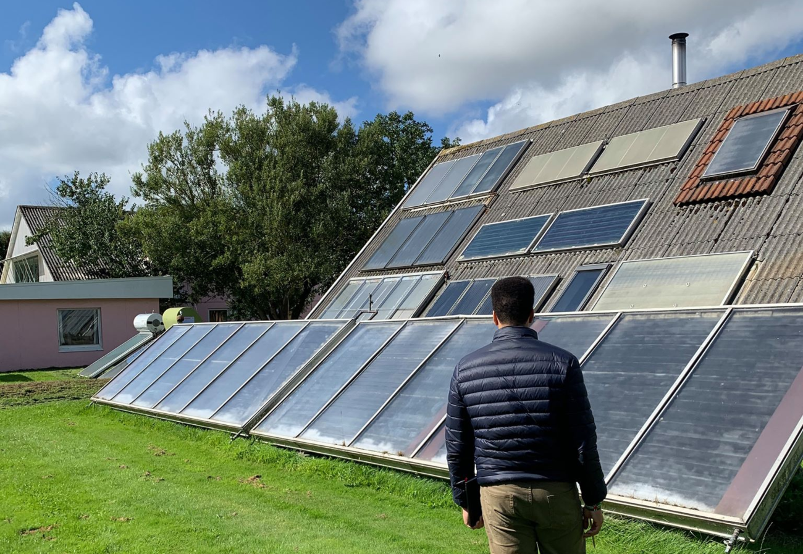
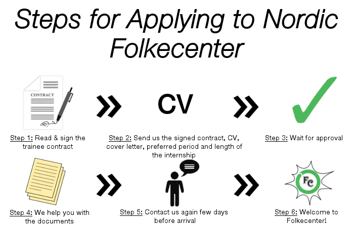

The general aim of the trainee programme is to provide knowledge about a variety of aspects within renewable energies, both from the technical and the socio-economic profile. The programme is developed around the trainee, meaning that there is not a standard path, but it is a more individual process which is carried in cooperation with the trainee, focusing on his needs and requests. Folkecenter helps defining the path and can also provide suggestions on which projects to be undertaken, but self-initiative is highly appreciated. In the event that the trainee already has a specific interest or topic he would like to focus on, it is highly recommended to mention it when applying for the position. The request will be evaluated and can undergo some modifications, based on Folkecenter's needs at the moment, but it will always be a result of a discussion between the center and the trainee. Depending on the students' interest and on the center's availability at the moment, it is possible to focus on most of the renewable energy fields. The philosophy of Folkecenter is to learn by doing, so trainees have the chance to make their experiments on real-life installations and technologies which are present at the Village for Green Research, where Folkecenter is located. Alternatively, desk researches can also be carried out, thanks to the large availability of relevant scientific material present at the center. Researches and experiments are carried out in the project form: you will be supervised by experienced people during the process, who will assist you in your path towards renewable energy knowledge. However, due to limited resources, the trainee should not expect a constant presence of the supervisor. During his stay at Folkecenter, the trainee will also take part in study trips to renewable energy installations located in the surroundings of the center and there will also be participation in conferences held at Folkecenter. In some occasions, the trainee might be requested to present the work done at events, which will be an important feature for the personal curriculum.
Although important for the trainee's future (or present) career, studying is not the only activity you will undergo at Folkecenter. We like to believe that our programme is not only forming people knowledge-wise, but that it is also a training for life: all the people who visit us will remember the experience for the whole life and they will radically change their way of seeing energy and living with the others. The programme has, through the years, hosted people from all over the world: multiculturality is a key word for Folkecenter, and a requirement at the same time: when planning to spend a period here, you will need to take into account that you will meet, work and live with people of different genders, ideas, religions and cultural backgrounds: all are welcome in Folkecenter and all should be treated with the same respect as you one would expect for himself. After a period here, you will not talk anymore about “foreigners”, but about “family”. As it can be seen from maps, Folkecenter is located in the countryside, therefore you should not expect the same nightlife as in big cities. Don't worry though! Living together means also that you have much more opportunities to socialize and spend the time together. Bike trips, dancing and singing evenings, road trips or just visits to the nearby cities will enrich your experience and will make you become part of Folkecenter's big family.
The trainee programme runs all over the year, so the trainee can select the preferred period, provided that there is availability of rooms. To apply, please send an e-mail to Daniele Pagani (dp@folkecenter.dk) with a signed copy of the trainee's contract, your CV and cover letter, where you should explain why you would like to come to Folkecenter, in which period, for how long and on what would you like to focus. In case you do not receive any answer within two weeks, please contact us again. Once your application is approved, we can help you with the relevant documents (invitation letter, learning agreements, etc.). Please, be aware that no help will be provided before the trainee contract is signed. For any further questions you might have, you are always welcome to contact the internship coordinator, Daniele Pagani (dp@folkecenter.dk).